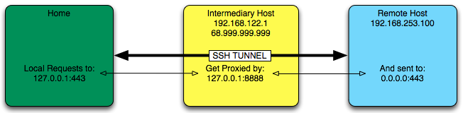

SSH Tunnel
Mon 30 July 2012 by Greg MoselleSSH is quite a bit more powerful than most people, myself included, give it credit. I'm often in a position where I need to be able to view http or https web pages on a remote system that is not accessible on 80 or 443. The solution is to tunnel https traffic over SSH. Here's how it works.

The Problem
I have a web service running on the remote host on port 443, but no access to that system because it only has a private IP address, for one thing, and it has a firewall blocking port 443 traffic between my home host and it.
The remote host does allow SSH traffic on port 22 from the intermediary host.
To tunnel https traffic to my localhost from the remote host, I do this:
On Remote Host
ssh -R *:8888:localhost:443 root@192.168.122.1 -N
This command will set up a listener on the Intermediary Host on port 8888. As shown:
[root@enf ~]# netstat -tnlup | grep ssh
tcp 0 0 0.0.0.0:22 0.0.0.0:* LISTEN 4461/sshd
tcp 0 0 127.0.0.1:8888 0.0.0.0:* LISTEN 31448/sshd: root
Any traffic hitting the Intermediary host machine on port 8888 will automatically be forwarded to the Dell Cloud Manager console machine on port 443, which is where the web service is listening.
However, since it's only listening on 127.0.0.1, we cannot yet access the web service from Home.
On Home Host
sudo ssh -L 443:localhost:8888 root@68.999.999.999 -N
This command will set up a listener on localhost, port 443, as shown.
gmoselle@dragonfly:~$ sudo netstat -an | grep 443
tcp4 0 0 127.0.0.1.443 *.* LISTEN
You must have root privileges to set up a listener on a "standard" port.
Hosts File
Finally, to complete the tunnel, I make a hosts file entry so I can access the web service.
127.0.0.1 cloud.myremoteconsole.com
Open a browser, and navigate to https://localhost and the remote remote web service should appear. Way cool.